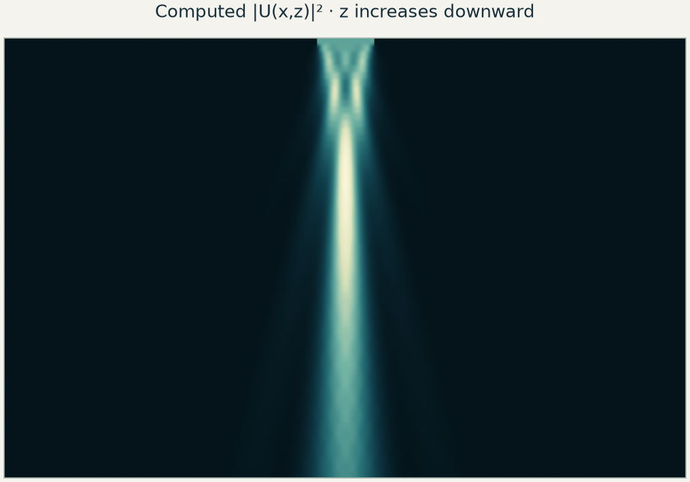
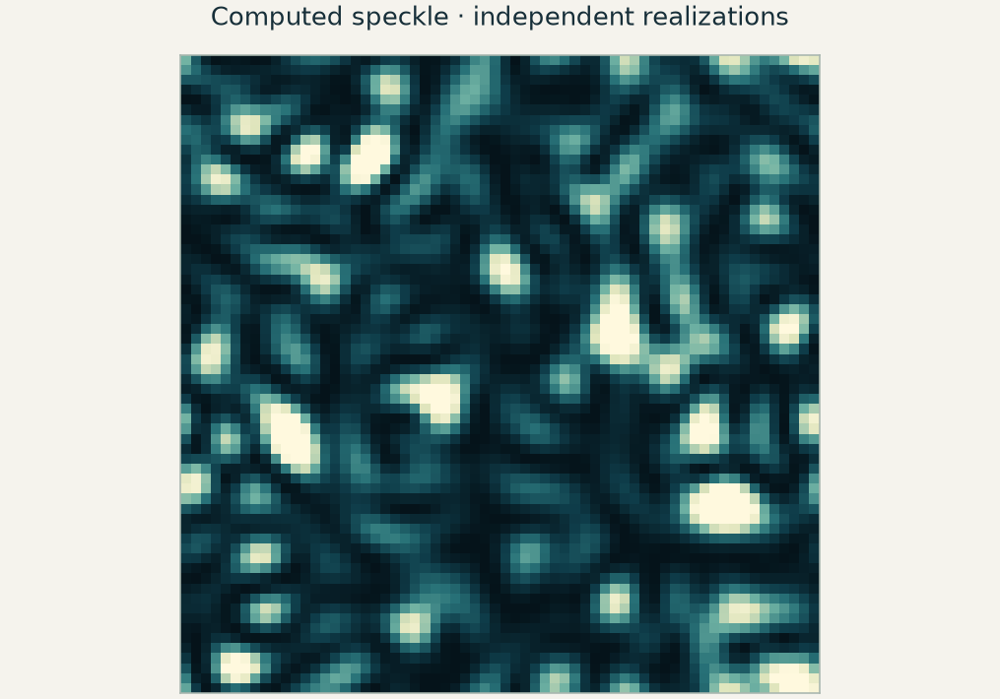
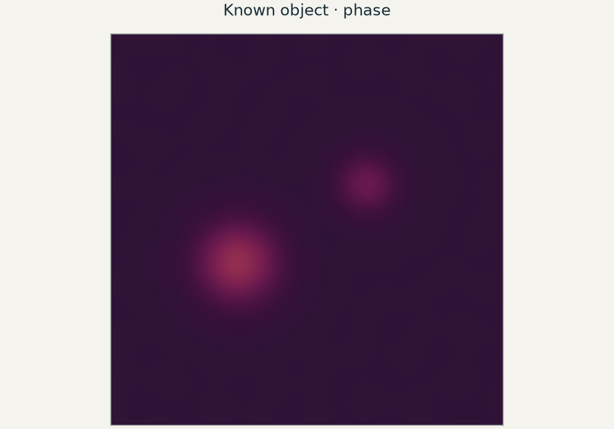
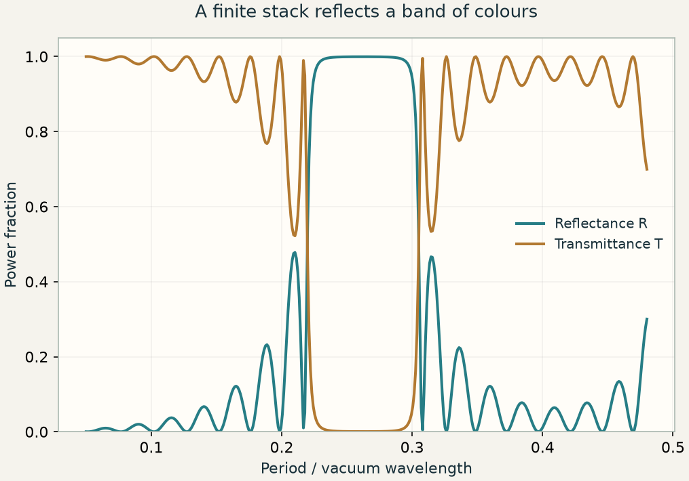
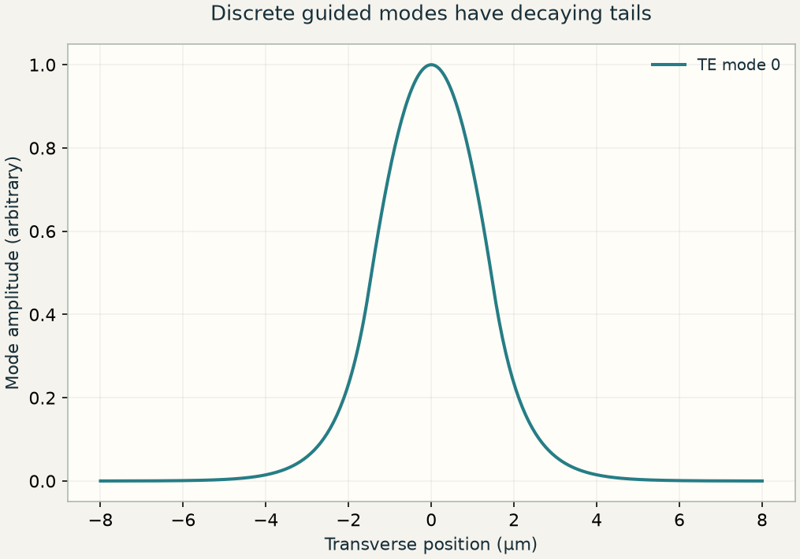

当前概念
可微光学
将光学预测连接到任务损失，检验导数，再更新光学或数字设计参数。
相连的概念 / 自主的学习路径
沿着相互联系的概念探索光学。从一个问题出发，找到相关课程，亲手检验其中的想法。
按概念探索
选择一个概念，查看它的联系，再进入相关章节。
连线表示概念之间的关系，不代表必须遵循的章节顺序。
先选择核心概念，需要深入时再展开具体术语。
当前概念
将光学预测连接到任务损失，检验导数，再更新光学或数字设计参数。
当前概念
同时保留振幅与相位，描述探测器测量强度之前的光场行为。
当前概念
用空间频率分量描述光场。同一种表示方式串起传播、成像、重建与设计。
当前概念
推进各个分量，再将它们叠加，从而追踪光场在空间中的传播。
传播分量在传播过程中积累相位。
角谱将光场分解为平面波。
比较标量传播与电磁场模型。
离散传播需要考虑混叠与计算窗口的限制。
几何光线与波动传播保留不同层次的物理信息。
当前概念
从光场的相关性理解相机平均后保留的现象：干涉、条纹可见度和散斑。
当前概念
比较几何成像误差、点响应和频率传递，理解光学图像能够承载哪些细节。
当前概念
借助参考光，或对强度测量施加约束，恢复光场信息。
当前概念
把所需的相位分布变成光学元件，再考察相位包裹、量化和波长依赖。
当前概念
从重复结构出发，联系衍射方向、布洛赫传播，以及结构阻挡的频段。
当前概念
寻找与算子或结构相适应的光场模式。相关的本征值方法也用于描述布洛赫波与统计意义上的相干模。
单周期算子的本征值给出布洛赫因子。
都使用本征分解，但描述的物理对象不同。
本征场与时域演化提供互补的观察角度。
当前概念
理解连续光场变成数组后发生的变化：采样限制、计算窗口与导数近似。
网格间距与时间步长影响数值误差。
离散传播需要考虑混叠与计算窗口的限制。
区分采样限制与光学截止频率。
当前概念
在网格上推进相互耦合的电场与磁场，并检验时间步长和边界处理的精度。
当前概念
用一个标量目标与伴随计算，求出每个设计参数如何改变结果。
当前概念
跟踪位置与方向如何通过折射曲面，再用有限孔径几何光线检验近轴预测。
当前概念
选择结构参数、目标函数与物理约束，再跨视场并用独立采样评价所得透镜。
章节索引
章节编号用于标识内容。可以按概念或兴趣选择，再复习该课用到的基础知识。

E01 / 短片 + 课程 + PYTHON 实验换一种表示方式，追踪狭缝光场的传播：分离各个方向，推进它们的相位，再叠加起来。
 E02 / 短片 + 课程 + PYTHON 实验
E02 / 短片 + 课程 + PYTHON 实验透镜把不同方向的平面波分到不同焦点。第二片透镜再把频谱变回图像，让你能够在两者之间修改它。
探索点扩散函数、数值孔径，以及图像能够承载的空间频率。

E04 / 短片 + 课程 + PYTHON 实验从同一个测量量——光场模平方的时间平均——理解干涉、光源带宽、光源尺寸和散斑。

E05 / 短片 + 课程 + PYTHON 实验将相位差变成可测的条纹，从旁带恢复复光场，并理解迭代约束能够确定什么、又无法确定什么。
 E06 / 短片 + 课程 + PYTHON 实验
E06 / 短片 + 课程 + PYTHON 实验薄元件通过厚度控制相位。将相位包裹到一个周期内，可以得到很薄的光学元件；相位量化与波长变化则揭示这种简化的代价。

E07 / 短片 + 课程 + PYTHON 实验用动量匹配找出衍射方向，再用单周期传输矩阵解释为什么周期堆栈能阻挡某个频段。

E08 / 短片 + 课程 + PYTHON 实验找出能够保持形状传播的光场，将它们叠加以在波导间传递功率，再把多次往返相加，构建谐振。
 E09 / 短片 + 课程 + PYTHON 实验
E09 / 短片 + 课程 + PYTHON 实验在交错网格上求解麦克斯韦方程中耦合的电磁场，理解时间步长、网格像素和计算边界为什么也是物理计算的一部分。
 E10 / 短片 + 课程 + PYTHON 实验
E10 / 短片 + 课程 + PYTHON 实验通过计算每个参数如何影响图像来设计相位掩模，再用一次伴随计算代替成千上万次独立扰动。
 E11 / 影片 + 课程 + PYTHON 实验
E11 / 影片 + 课程 + PYTHON 实验逐面追踪光线穿过两个曲面，比较近轴焦点与有限孔径光束，并区分几何模糊与衍射。
 E12 / 影片 + 课程 + PYTHON 实验
E12 / 影片 + 课程 + PYTHON 实验在保持近轴光焦度的条件下改变单透镜形状。选择公共像面，减小明确的几何误差，并检查设计在中心视场之外付出了什么代价。
 E13 / 影片 + 课程 + PYTHON 实验
E13 / 影片 + 课程 + PYTHON 实验将光学参数、测量强度与标量损失连成一条计算链。检验梯度，改进相位元件，再理解这条链如何延伸到镜头设计与计算成像。
每节课从一个光学问题及其意义出发。检查预备知识，观看已有的配套影片，再通过控件改变实际模型，把结果与公式连接起来。Python 实验随后重建计算，进行独立检验，并要求你说明模型忽略了什么。
每节课建议用时 12–15 分钟，核心实验约需 25–30 分钟。通过概念图谱选择起点，再沿着问题探索相关概念。遇到不熟悉的基础知识，可以使用各节课的预备知识链接复习。即使不看配套短片，也可以完成课程。
在 Colab 或本地 Jupyter 中运行实验。实验使用 NumPy、SciPy 和 Matplotlib，在 CPU 上即可完成，附有已保存的图表，无需外部数据集。教师说明提供 45–50 分钟的课堂安排与评分标准。
本课程需要大学本科层次的微积分、线性代数和基础 Python 知识。复振幅与傅里叶分解联系着多个主题；概率、电磁场与梯度将在需要它们的课程中使用。
每节课都列出所需技能、说明它们在哪里用到，并推荐相关教材或讲座。查看准备学习的课程，只需复习其中不熟悉的部分。